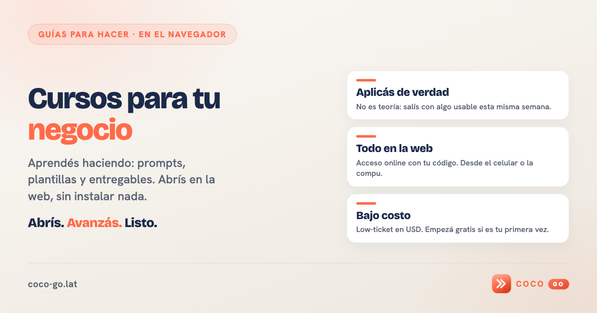
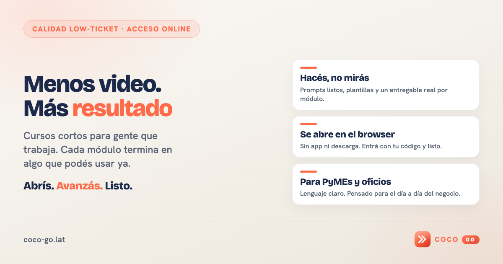
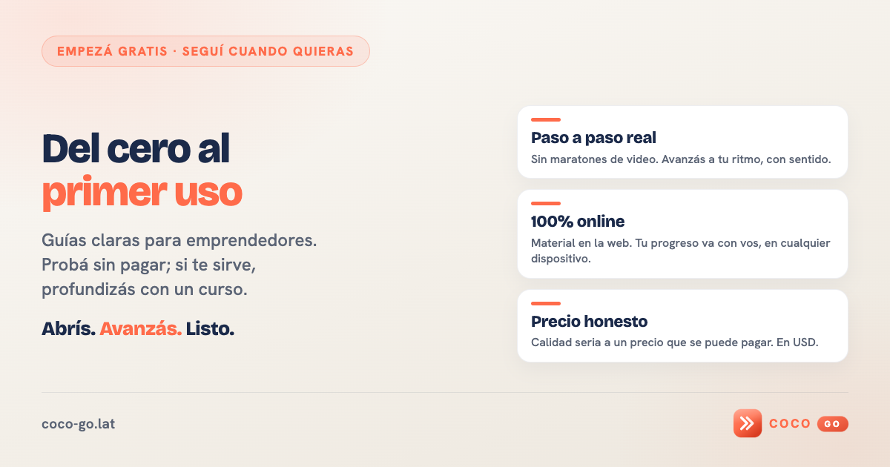
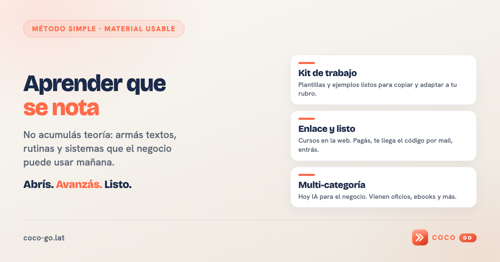

OG home — variantes
Elegí una. La v1 es la que te gustó. Las v2–v4 son mensajes distintos, mismo diseño.

V1 · Guías para hacer · en el navegadorbase

V2 · Menos video. Más resultadonueva

V3 · Del cero al primer usonueva

V4 · Aprender que se notanueva